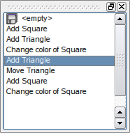

| Home · All Classes · Modules · QSS HELP · QSS 案例 · VER007 HOME |
该QUndoView类显示的内容QUndoStack。More...
继承QListView。
该QUndoView类显示的内容QUndoStack。
QUndoView是QListView其中显示命令的列表上推撤消堆栈。最近执行的命令总是选择。选择在通话中不同的命令结果QUndoStack.setIndex（ ） ，滚动文档的状态向后或向前的新命令。
该协议栈可以显式设置setStack（ ） 。另外，一个QUndoGroup对象可以与设置setGroup（ ） 。那么该视图会自动更新每当小组的活动堆栈变化。

该parent的说法，如果不是没有，原因self通过Qt的，而不是PyQt的拥有。
构造一个父一个新的视图parent。
该parent的说法，如果不是没有，原因self通过Qt的，而不是PyQt的拥有。
构造一个父一个新的视图parent与所观察到的堆栈设置到stack。
该parent的说法，如果不是没有，原因self通过Qt的，而不是PyQt的拥有。
构造一个父一个新的视图parent而观察组设置为group。
该视图会自动更新autmiatically每当组的活动堆栈变化。
返回此视图中显示的组。
如果视图不看组，这个函数返回0 。
See also setGroup（）和setStack（ ） 。
这种方法也是一个Qt槽与C + +的签名void setGroup(QUndoGroup *)。
设置此视图中显示的组group。如果group为0时，显示将是空的。
该视图会自动更新autmiatically每当组的活动堆栈变化。
See also group（）和setStack（ ） 。
这种方法也是一个Qt槽与C + +的签名void setStack(QUndoStack *)。
设置此视图中显示的栈stack。如果stack为0时，显示将是空的。
如果认为以前一直在寻找一个QUndoGroup的组被设置为0 。
See also stack（）和setGroup（ ） 。
返回当前此视图中显示的堆栈。如果视图是在看QUndoGroup这个小组的活动堆栈。
See also setStack（）和setGroup（ ） 。
| PyQt 4.10.3 for X11 | Copyright © Riverbank Computing Ltd and Nokia 2012 | Qt 4.8.5 |